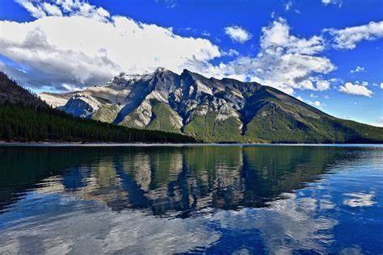

A mountain is an elevated portion of the Earth's crust, generally with steep sides that show significant exposed bedrock. A mountain differs from a plateau in having a limited summit area, and is larger than a hill, typically rising at least 300 metres (1000 feet) above the surrounding land. A few mountains are isolated summits, but most occur in mountain ranges.
Fold mountains occur when two plates collide: shortening occurs along thrust faults and the crust is overthickened. Since the less dense continental crust "floats" on the denser mantle rocks beneath, the weight of any crustal material forced upward to form hills, plateaus or mountains must be balanced by the buoyancy force of a much greater volume forced downward into the mantle. Thus the continental crust is normally much thicker under mountains, compared to lower lying areas.
During and following uplift, mountains are subjected to the agents of erosion (water, wind, ice, and gravity) which gradually wear the uplifted area down. Erosion causes the surface of mountains to be younger than the rocks that form the mountains themselves.